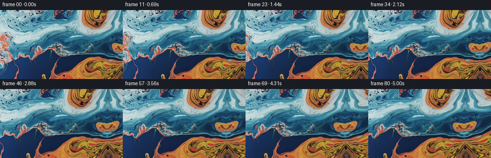
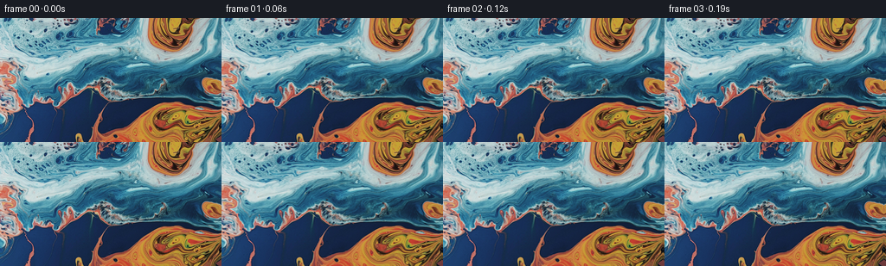

候选 01 · 2026-11-09T00:21:55.299243+00:00 · 点开播放与检查图
inspection.png

transition_check.png

代码变化
--- 上一保存版本
+++ 本次保存版本
@@ -0,0 +1,81 @@
+"""Generate a macro liquid-marbling shot with a gentle rightward camera pan.
+
+All pigment detail is sampled from the supplied first frame. A continuous,
+slow vortical flow carries it while the camera moves across the surface.
+"""
+from pathlib import Path
+import numpy as np
+from PIL import Image
+from scipy.ndimage import map_coordinates
+import artifact_io
+
+ROOT = Path(__file__).resolve().parent
+
+
+def velocity(x, y):
+ # Radial vortex envelopes are divergence-free and do not make the paint
+ # pulse in size. Over five seconds these move contours only a few pixels.
+ vx = np.full_like(x, 0.10)
+ vy = np.full_like(y, 0.035)
+ for cx, cy, radius, omega in (
+ (195., 8., 46., 0.026),
+ (218., 131., 57., -0.020),
+ (123., 70., 73., 0.010),
+ (290., 70., 66., 0.013),
+ ):
+ dx, dy = x-cx, y-cy
+ w = omega*np.exp(-(dx*dx+dy*dy)/(2*radius*radius))
+ vx -= dy*w
+ vy += dx*w
+ # A broad streaming component links the separate eddies smoothly.
+ u, v = x/68.0 + 0.4, y/49.0 + 0.2
+ vx += 0.48*np.sin(u)*np.cos(v)
+ vy -= 0.48*(49.0/68.0)*np.cos(u)*np.sin(v)
+ return vx, vy
+
+
+def sample_pigment(image, x, y):
+ # Beyond the original right edge, curve the reflected pigment sheet.
+ # This keeps the blue/orange boundary continuous, while vertical shear
+ # gives new lobes asymmetric, flowing shapes instead of a mirrored tile.
+ d = np.maximum(x-255.0, 0.0)
+ sx = np.where(x <= 255.0, x, 255.0-d*(1.0-0.004*d))
+ sy = y + 0.0055*d*d*(0.58+0.42*np.sin(y/48.0+0.5))
+ coords = np.stack((sy, sx))
+ rgb = np.stack([map_coordinates(image[..., c], coords, order=3,
+ mode='reflect', prefilter=True)
+ for c in range(3)], axis=-1)
+ return np.clip(np.rint(rgb), 0, 255).astype(np.uint8)
+
+
+def generate():
+ source = np.asarray(Image.open(ROOT/'first_frame.png').convert('RGB'))
+ sourcef = source.astype(np.float64)
+ yy, xx = np.mgrid[0:144, 0:256].astype(np.float64)
+ frames = [source.copy()]
+ for i in range(1, 81):
+ t = i/16.0
+ fraction = i/80.0
+ # The camera advances right; stationary pigment consequently travels
+ # left. The almost linear speed preserves the close-up macro scale.
+ pan = 52.0*(fraction-0.06*np.sin(2*np.pi*fraction)/(2*np.pi))
+ x = xx+pan
+ y = yy+0.35*np.sin(np.pi*fraction)
+ # Trace material positions backward with midpoint integration. This
+ # samples the unmodified original each time, avoiding blur buildup.
+ steps = max(1, int(np.ceil(t/0.24)))
+ dt = t/steps
+ for _ in range(steps):
+ vx, vy = velocity(x, y)
+ mx, my = x-0.5*dt*vx, y-0.5*dt*vy
+ vx, vy = velocity(mx, my)
+ x -= dt*vx
+ y -= dt*vy
+ frames.append(sample_pigment(sourcef, x, y))
+ return np.stack(frames)
+
+
+if __name__ == '__main__':
+ frames = generate()
+ assert np.array_equal(frames[0], np.asarray(Image.open(ROOT/'first_frame.png').convert('RGB')))
+ artifact_io.save(frames, ROOT)
命令 2 · 2026-11-09T00:20:47.340980+00:00/bin/bash -lc "cat task_spec.json && sed -n '1,240p' artifact_io.py && python - <<'PY'
import importlib.util
for s in ['numpy','PIL','scipy','cv2']:
print(s, bool(importlib.util.find_spec(s)))
from PIL import Image
im=Image.open('first_frame.png');print(im.size)
im.resize((1024,576)).save('.tmp/source_large.png')
PY"exit 0 命令 3 · 2026-11-09T00:21:51.733300+00:00/bin/bash -lc "cat > generate.py <<'PY'
\"\"\"Generate a macro liquid-marbling shot with a gentle rightward camera pan.
All pigment detail is sampled from the supplied first frame. A continuous,
slow vortical flow carries it while the camera moves across the surface.
\"\"\"
from pathlib import Path
import numpy as np
from PIL import Image
from scipy.ndimage import map_coordinates
import artifact_io
ROOT = Path(__file__).resolve().parent
def velocity(x, y):
# Radial vortex envelopes are divergence-free and do not make the paint
# pulse in size. Over five seconds these move contours only a few pixels.
vx = np.full_like(x, 0.10)
vy = np.full_like(y, 0.035)
for cx, cy, radius, omega in (
(195., 8., 46., 0.026),
(218., 131., 57., -0.020),
(123., 70., 73., 0.010),
(290., 70., 66., 0.013),
):
dx, dy = x-cx, y-cy
w = omega*np.exp(-(dx*dx+dy*dy)/(2*radius*radius))
vx -= dy*w
vy += dx*w
# A broad streaming component links the separate eddies smoothly.
u, v = x/68.0 + 0.4, y/49.0 + 0.2
vx += 0.48*np.sin(u)*np.cos(v)
vy -= 0.48*(49.0/68.0)*np.cos(u)*np.sin(v)
return vx, vy
def sample_pigment(image, x, y):
# Beyond the original right edge, curve the reflected pigment sheet.
# This keeps the blue/orange boundary continuous, while vertical shear
# gives new lobes asymmetric, flowing shapes instead of a mirrored tile.
d = np.maximum(x-255.0, 0.0)
sx = np.where(x <= 255.0, x, 255.0-d*(1.0-0.004*d))
sy = y + 0.0055*d*d*(0.58+0.42*np.sin(y/48.0+0.5))
coords = np.stack((sy, sx))
rgb = np.stack([map_coordinates(image[..., c], coords, order=3,
mode='reflect', prefilter=True)
for c in range(3)], axis=-1)
return np.clip(np.rint(rgb), 0, 255).astype(np.uint8)
def generate():
source = np.asarray(Image.open(ROOT/'first_frame.png').convert('RGB'))
sourcef = source.astype(np.float64)
yy, xx = np.mgrid[0:144, 0:256].astype(np.float64)
frames = [source.copy()]
for i in range(1, 81):
t = i/16.0
fraction = i/80.0
# The camera advances right; stationary pigment consequently travels
# left. The almost linear speed preserves the close-up macro scale.
pan = 52.0*(fraction-0.06*np.sin(2*np.pi*fraction)/(2*np.pi))
x = xx+pan
y = yy+0.35*np.sin(np.pi*fraction)
# Trace material positions backward with midpoint integration. This
# samples the unmodified original each time, avoiding blur buildup.
steps = max(1, int(np.ceil(t/0.24)))
dt = t/steps
for _ in range(steps):
vx, vy = velocity(x, y)
mx, my = x-0.5*dt*vx, y-0.5*dt*vy
vx, vy = velocity(mx, my)
x -= dt*vx
y -= dt*vy
frames.append(sample_pigment(sourcef, x, y))
return np.stack(frames)
if __name__ == '__main__':
frames = generate()
assert np.array_equal(frames[0], np.asarray(Image.open(ROOT/'first_frame.png').convert('RGB')))
artifact_io.save(frames, ROOT)
PY
OPENBLAS_NUM_THREADS=1 python generate.py"exit 0 命令 5 · 2026-11-09T00:22:44.968762+00:00/bin/bash -lc "python - <<'PY'
from PIL import Image
import numpy as np
from pathlib import Path
p=np.load('pixels.npz')['pixels']
a=np.asarray(Image.open('first_frame.png').convert('RGB')).astype(np.uint32)
assert p.shape==(144,256,81)
assert np.array_equal(p[:,:,0],a[:,:,0]*65536+a[:,:,1]*256+a[:,:,2])
assert len(list(Path('frames').glob('*.png')))==81
print('Validated: 81 RGB frames, 256x144, exact original frame 00.')
PY"exit 0